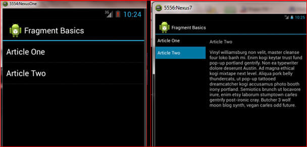

Introduction
This lab involves two distinct concepts: data storage, and fragments. There is also an extended exercise on using file storage for multiple files.
Saving Data
A typical application often needs to save data to be restored at a later date. Two ways to do this inAndroid are to use Key-Value Sets and to use files. Other alternatives include saving data in a database, e.g. an sqlite database when using Android.
In this part of the lab the aim is to experiment with key-value sets and with file storage. Begin by reading the descriptions here:
- http://developer.android.com/training/basics/data-storage/shared-preferences.html
- http://developer.android.com/training/basics/data-storage/files.html
Now modify your Lissajous app from last week (or the LissajousTwo app that was distributed) to save the state of the curve to a file on the internal storage for the app, so that next time the app is launched it will show the previous state of the curve. When doing this think carefully about whether it will be easier to use a Key-Value Set or to use a file.
Hint: when doing this, think carefully about what data acutally needs to be stored!
Fragments
Read the Fragments lecture notes, then work through the FragmentBasics tutorial here:
Run the app both on the Nexus One and the Nexus 7 emulators (or use real devices with small and large screens). Note how the appropriate layout is automatically shown, as in the example below:

Exercise
Extend the file saving feature at the start of this lab to allow saving different curves to different named files. It should also be possible to delete curves which are no longer needed, and to reload saved curves.
Quiz
- In the FragmentBasics example, what would be the effect of mispelling the "layout-large" directory name?
- Explain when to it is most appropriate to use internal versus external file storage.
- Why should all communication between sibling Fragments go via their parent / host?
- Why is it necessary to add or remove Fragments within a FragmentTransaction?
- Under what conditions is it necessary for an Activity that hosts a Fragment to extend FragmentActivity?
- When writing to external storage what must be added to the manifest file?
- When opening a file for writing explain how to have the new data either overwrite the existing data, or append to the existing data.
end of page